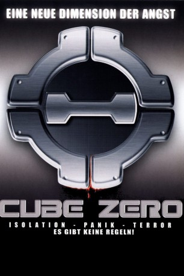
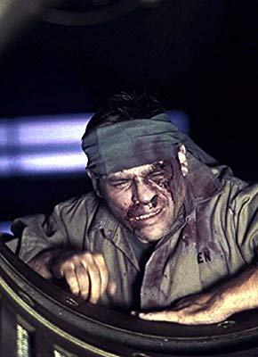

#1492 Cube 3 - Zero
 gesehen am 11.07.2015
gesehen am 11.07.2015
 
 IMDB-Wertung: 5.7 / 10
IMDB-Wertung: 5.7 / 10  Metascore: 0
Metascore: 0 
Irgendwo tief unter der Erde Nordamerikas befindet sich ein riesiger geheimer Komplex, in dem sich, so glaubt es zumindest das Personal, zum Tode verurteilte Straftäter freiwillig einem Versuchsprogramm unterziehen. Als jedoch eine junge Mutter in das lebensgefährliche Labyrinth des Cube gerät, beginnt der junge Wartungsingenieur Eric am System zu zweifeln. Zweifel, die ihn alsbald selbst zum Opfer der perfekten Tötungsmaschinerie machen.
Jahr: 2004
Dauer: 97 Minuten
FSK: 18
Land: Kanada Studio: e-m-s the DVD-CompanyTonspuren: DTS - ,
Untertitel:
Auflösung: 1080p (1920x1080) Größe: 7956 MB
Genre: Thriller, Sci-Fi, Mystery
Regisseur: Ernie Barbarash
Drehbuch: Ernie Barbarash
Soundtrack: Norman Orenstein
Darsteller:
 Zachary Bennett als Eric Wynn
Zachary Bennett als Eric Wynn- Stephanie Moore als Cassandra Rains
 Martin Roach als Robert P. Haskell
Martin Roach als Robert P. Haskell- Michael Riley als Jax
 Joshua Peace als Finn
Joshua Peace als Finn Diego Klattenhoff als Quigley
Diego Klattenhoff als Quigley- Jasmin Geljo als Ryjkin
- Kyle McDonald als Squad Leader
- Sandi Ross als Chandler
 David Huband als Dodd
David Huband als Dodd- Terri Hawkes als Jellico
- Richard McMillan als Bartok
- Mike 'Nug' Nahrgang als Meyerhold
-  Tony Munch als Owen
- Alexia Filippeos als Anna
- Fernando Cursione als Doctor
- Flossie McKnight als Female Doctor
- Dino Bellisario als Smith
- Ashley James als McCaw
- Zero the Fish als Himself
Datei: X:\3-Trilogie(A-F)\Cube\Cube 3 - Zero (2004, FSK18, 1920x1080).mkv seit 10.07.2015
Festplatte: HD Collection-2(A-Z)-3(A-M)
 Alle Filme aus Gruppe '3-Trilogie(A-F)\Cube'
Alle Filme aus Gruppe '3-Trilogie(A-F)\Cube'